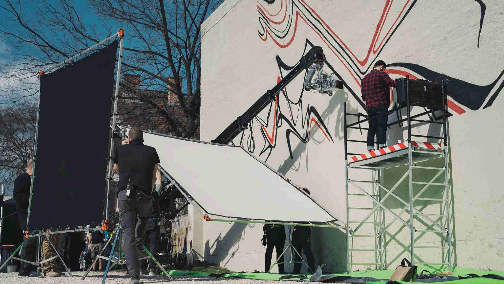

Ez az egyik legőszintétlenebbre sikerült kérdés az iparágban. Ha valaki reklámfilm készítés árára kérdez rá, a legtöbb stúdió „írjon és küldünk ajánlatot" választ ad – pont akkor, amikor a megrendelőnek még csak fogalma sincs arról, mit akar pontosan, mennyit kellene terveznie, vagy egyáltalán mibe fog ez kerülni.
Mi mást gondolunk erről. A transzparencia bizalmat épít, a bizalom pedig hosszú távú együttműködéseket. Ezért ebben a cikkben leírjuk mindazt, amit a videó készítés áráról tudni érdemes: tipikus magyarországi árkereteket, az egyes költségtételeket, és azt is, hogyan lehet egy adott büdzséből a legtöbbet kihozni.
Nem általánosságokat, hanem valódi, a hazai piacon reálisan elérhető számokat.
Reklámfilm készítés ára Magyarországon (2026)
Az alábbi táblázat a magyarországi piacon jellemző árkereteket mutatja. Ezek tájékoztató számok – minden projekt egyedi –, de jó kiindulópontot adnak az elvárások kalibrálásához.
| Videótípus | Alapkivitelezés | Közepes produkció | Prémium produkció |
|---|---|---|---|
| 30 mp-es online reklámfilm | 350 000 – 600 000 Ft | 600 000 – 1 200 000 Ft | 1 200 000 Ft felett |
| 60 mp-es reklámfilm | 500 000 – 900 000 Ft | 900 000 – 2 000 000 Ft | 2 000 000 Ft felett |
| Brand film (2–4 perc) | 800 000 – 1 500 000 Ft | 1 500 000 – 3 500 000 Ft | 3 500 000 Ft felett |
| Corporate / bemutatkozó videó | 400 000 – 800 000 Ft | 800 000 – 1 800 000 Ft | 1 800 000 Ft felett |
| Social media kampányvideó | 200 000 – 500 000 Ft | 500 000 – 1 000 000 Ft | 1 000 000 Ft felett |
Minden ár nettó, áfát nem tartalmaz. Az árkeretek előzetes egyeztetést igényelnek.
Fontos hangsúlyozni: az „alapkivitelezés" nem jelent gyenge minőséget. Egy jól megtervezett, kisebb büdzséjű produkció tapasztalt csapattal rendkívüli eredményt hozhat – ha az előkészítés precíz és a kreatív döntések tudatosak. A prémium kategória nem arról szól, hogy drágább, hanem arról, hogy a komplexitás – stáb, helyszín, látványvilág, post-production mélység – egy más szinten mozog.
Videó készítés ára – milyen tényezők határozzák meg?
Mielőtt az egyes tételeket részletesen megnéznénk, érdemes megérteni, hogy a videógyártás ára soha nem egyetlen sorból áll össze. Legalább hat-nyolc tényező eredője, amelyek egymással kölcsönhatásban vannak.
A videó hossza önmagában nem határozza meg az árat. Egy 30 másodperces autóipari reklámfilm lehet sokkal drágább, mint egy 3 perces, természetes fénnyel forgatott éttermi brand film – ha az előbbinél speciális felszerelés, több helyszín és komplex utómunka szükséges.
A három legnagyobb árképző tényező általában: a stáb mérete és összetétele, a helyszín komplexitása, valamint a post-production munkamennyisége. Ezek együttesen a produkció összköltségének 70–80%-át teszik ki.
Reklámfilm költségek részletesen
Pre-production
A forgatás előtti fázis az, amelyet a megrendelők leggyakrabban alábecsülnek – és amelynek minőségén leginkább múlik a végeredmény. Ide tartozik a kreatív koncepció kidolgozása, a forgatókönyv és storyboard megírása, a helyszínfelderítés, a casting, a gyártási ütemterv összeállítása, a szükséges engedélyek beadása és a teljes logisztikai tervezés.
Egy közepes méretű projekt esetén ez önmagában 3–5 munkanapnyi stábmunkát jelent. Az árajánlatokban ez sokszor „benne van", de ha egy stúdió az ajánlatát csak a forgatási napokra adja meg, érdemes rákérdezni, hogy a pre-production munka hogyan kerül elszámolásra.

Stáb
A stáb összetétele az egyik legnagyobb változó. Egy kompakt, 3 fős csapat – operatőr, rendező, asszisztens – elegendő lehet egy social media videóhoz vagy egy egyszerűbb corporate interjúhoz. Egy összetettebb reklámfilm forgatásán azonban szükség lehet külön gafferre (fényvezető), hangmérnökre, fókuszpullerre, sminkes-styliszt párosra, kellékesre és produceri asszisztensre is.
A szakember napidíjak Magyarországon 2026-ban jellemzően 55 000–160 000 Ft/nap között mozognak, a tapasztalattól és a szakterülettől függően. Egy 6 fős stáb egy napos forgatáson tehát önmagában 450 000–750 000 Ft közötti napidíjköltséget generál, mielőtt bármilyen felszerelés, helyszín vagy utómunka szóba kerülne.
Helyszín
A helyszínválasztás egyszerre kreatív és pénzügyi döntés. Egy nyitott, fotogén étterem saját helyszíne minimális extra költséggel jár; egy budapesti közterület forgalmas helyszínen már engedélyköteles és forgalomelterelést igényelhet. Egy professzionális fotóstúdió bérlete jellemzően 80 000–200 000 Ft/napba kerül, míg egy exkluzív helyszín – prémium szálloda lobby, reprezentatív irodaépület – ennek sokszorosát is kérheti.
Több helyszín egy forgatási napon belül komolyan növeli a logisztikai terhet: az utazásra, átállásra fordított idő közvetlen stábnapidíjban mérhető.
Szereplők
Ha a forgatókönyv hivatásos színészeket vagy modelleket igényel, azok napidíja ügynökségtől és tapasztalattól függően 50 000–200 000 Ft körül alakul. Ehhez adódik az ügynökségi díj, amely jellemzően a bruttó napidíj 20–30%-a. Ismert arc, influencer vagy televíziós személyiség bevonása más üzleti modell szerint működik – ott a tárgyalásos alap az egyedi.
Vállalati videóknál a cég saját munkatársai is szerepelhetnek – ez természetessé teszi a tartalmat és csökkenti a casting költségét. Jól alkalmazva ez nem kompromisszum, hanem tudatos döntés.
Drónfelvételek
A légifelvételek mára alapelem számos szállodai, ingatlan- vagy eseményvideóban. Egy tapasztalt, érvényes EASA-engedéllyel rendelkező drónos operatőr Cinema-osztályú eszközzel 80 000–150 000 Ft/nap között dolgozik Magyarországon. Ha a helyszín légtérkorlátozás alá esik – Budapest belváros, repülőterek közelében, fesztiválok –, az előzetes engedélyeztetés 2–4 hetes átfutást és adminisztrációs pluszköltsége jelent. Ezt mindig érdemes az előkészítési fázisban kezelni.
Post-production
A vágás, színkorrekció, hangkeverés és esetleges motion graphics fázis sokszor a teljes produkciós idő 40–60%-át teszi ki. Egy egyszerű 1 perces spot vágása és standard színkorrekciója 2–3 munkanapot igényel; összetett animációs betétek, részletes VFX elemek vagy több platform-formátum export ennek többszörösét.
2026-ra a vertikális, 9:16 arányú formátum önálló post-production tétellé vált: a TikTok, Instagram Reels és YouTube Shorts tudatosan komponált képkivágást igényelnek, nem csupán utólagos exportot. Ha a kampány ezeken a platformokon is fut, ezt már a forgatás tervezésekor és a vágási ütemtervben érdemes figyelembe venni – ez néha fél, néha egész extra vágónapot jelent.
A post-production minősége az, ami a „jó felvételből" igazán kész filmet csinál. A nem megfelelő vágás, lapos hangzás vagy sótlan színkezelés az anyag kreatív értékéből sokat levon – a néző nem tudja megmondani miért, de érzi.
Zenei licenc tekintetében: prémium könyvtári zenék licencdíja 50 000–300 000 Ft körül mozog felhasználástól és területtől függően. Egyedi zeneszerzés erre rakódik; rövid jingle esetén 150 000–500 000 Ft, teljes filmzenei megrendelésnél ennél többszörös is lehet.
Az olcsó reklámfilm kétszer kerül többe. Egyszer a gyártásra, egyszer a nem hozott ügyfelekre.
Mi emeli leginkább egy reklámfilm büdzséjét?
Néhány tényező aránytalanul nagyot dobhat a végső áron – ezeket érdemes tudatosan kezelni a tervezési fázisban.
Az animáció és motion graphics az egyik legnagyobb multiplikátor. Egy logóanimáció belefér 50–80 ezer forintba, de egy komplex 3D termékanimáció vagy motion graphics heavy opener napokig tartó munkát jelent, és akár a teljes produkció árával egyenértékű utómunkaköltséget generálhat.
Az expressz kivitelezés szinte minden stúdiónál 25–50%-os felárat jelent. Ha a gyártási idő kevesebb mint 3 hét, valaki a stáb kapacitásából enged oda – és azt a kapacitást megfizetik.
A forgatókönyv-változtatások a forgatás után az egyik legdrágább döntés, amit egy megrendelő hozhat. Ha az anyag vágás közben változik – új termék kerül be, megváltozik az üzenet –, az újraforgatás egy egész produkciós napot és annak teljes stábköltségét jelenti.
A több helyszín és utazás logisztikailag és pénzügyileg is összeadódik: minden plusz helyszín átállási időt, szállítási költséget és extra stábnapidíjat jelent.
Hogyan csökkenthető egy videó produkció költsége?
Kisebb büdzsével is lehet magas minőségű tartalom – de ez tudatos döntéseket és jó előkészítést igényel.
A leghatékonyabb módszer az egy forgatási napon belüli tartalom-multiplikáció: ha már ott a stáb és a felszerelés, egy hosszabb brand film mellett minimális plusz idővel elkészülhetnek a social media vágatok, egy rövidebb Instagram Reel-verzió, vagy interjú-részletek külön platformra. Az egyszer kiforgott anyag többféleképpen is felhasználható.
A természetes fény és fotogén helyszín okos megválasztása komolyan spórolhat a fényvezető és a stúdiólighting-páket rentálásán. Egy jól időzített, délelőtti forgatás napfényes irodában vagy étteremben minőségi eredményt hozhat lámpa nélkül is.
A részletes brief és storyboard az előkészítési fázisban befektetett idő, amely forgatási napokat spórolhat meg: ha mindenki pontosan tudja, mit és hogyan forgatunk, nincs helyszíni döntéskényszerre vesztegetett idő.
A royalty-free zenei könyvtárak megfelelő minőségű alapot adnak 0–30 000 Ft közötti licencdíjért, ha a produkció nem igényli az egyedi zeneszerzés hozzáadott értékét.
Érdemes megjegyezni, hogy 2026-ra az AI-alapú vágási és hangszerkesztési eszközök egyes rutinfeladatokon valóban csökkentették a post-production átfutási időt – különösen interjú-alapú corporate videóknál. Kisebb projekteken 10–20%-os időmegtakarítást hozhat, ami az árajánlatban is megjelenhet. Komplex kreatív vágásnál, color grading-nél és hangkeverésnél azonban az emberi szakértelem meghatározó marad: az AI-eszközök itt kiegészítők, nem helyettesítők.
Reklámfilm készítés ára Budapest vs vidéki forgatás
Sokan feltételezik, hogy Budapest drágább – részben igaz, de a kép árnyaltabb.
Budapesten a helyszínbérleti díjak valóban magasabbak: egy belső kerületi stúdió, egy reprezentatív irodaépület vagy egy látványos tetőterasz bérlete rendre 20–40%-kal többe kerül, mint egy vidéki város megfelelő helyszíne. A közterületi engedélyeztetés a főváros forgalmas pontjain bürokratikusabb és drágább, mint vidéken.
Ugyanakkor a budapesti stáb nem feltétlenül drágább: a tapasztalt szakemberek legnagyobb koncentrációja a fővárosban van, ami versenyképes árazást is jelent. Vidéki forgatásnál pedig az utazási és szállásköltség – ha a stáb Budapestről megy ki – megjelenhet a büdzséban.
Ökölszabályként: ha a megrendelő helyszíne vidéken van, de nem igényel ikonikus budapesti hátteret, érdemes helyi stúdióval is ajánlatot kérni. Ha a fővárosi látképre, urbánus atmoszférára vagy specifikus helyszínre van szükség, a budapesti forgatás a legtöbb esetben megéri a pluszköltséget.
Külföldi helyszínre épülő produkció – pl. egy horvát tengerparton forgatott resort-film vagy egy bécsi üzleti konferencia dokumentálása – önálló kategória: az utazási logisztika és az esetleges külföldi stábbevonás komoly plusztételt jelent, amelyet projektenként kell kalkulálni.
Miért térnek el ennyire az ajánlatok egymástól?
Ez egy jogos kérdés, amelyet sokan tesznek fel, miután két-három ajánlatot kaptak ugyanarra a projektre – és azok között 300 000 és 2 000 000 Ft közötti különbséget találnak.
Az okok általában a következők: eltérő stáb-összetétel és tapasztalati szint, eltérő felszerelés (Cinema-kamera vs. prosumer eszköz), különböző post-production mélység és szoftverháttér, valamint az, hogy az ajánlat mit tartalmaz pontosan. Egy megbízó sokszor csak a forgatási napra kap árat, miközben a pre-production, az anyagok archiválása és az összes formátumexport nem szerepel benne.
A Vision Studio portfóliójában megtekinthető munkák prémium márkák, szállodák és nagyvállalatok számára készültek. Ajánlataink teljes körűek: az első brieftől az utolsó delivery fájlig minden tételt transzparensen bontunk – azért, hogy a megrendelő pontosan tudja, miért kerül annyiba, amennyibe.
Valódi projektpéldák reklámfilm költségekre
1. Boutique hotel brand film – Budapest belváros
Egy 4 csillagos design hotel 2 perces brand filmet rendelt, amely a szobák atmoszféráját, a reggeliző teret és a közeli városnegyedet mutatja be. A produkció két napig tartott: egy nap az épületen belül, egy nap a belvárosban drónnal és utcai jelenetekkel. Profi stáb 5 fővel, Cinema kamerával, napkelte előtti időpontokban forgatva a zsúfoltság elkerülésére. Post-production: full color grade, hangkeverés, zenei licenc, 3 formátumverzió.
Becsült produkciós cost: 2 200 000 – 3 000 000 Ft nettó
2. Étterem social media kampány – Budapest VIII. kerület
Egy kreatív konceptű étterem 3 rövid – 15 és 30 másodperces – videót rendelt Instagram Reels és TikTok platformokra, amelyek az ételeket, a séfet és a belső teret mutatják be különféle szögekből és ritmusban. Egy forgatási nap, 3 fős kompakt stáb, természetes fény. Minimális vágás, gyors turnaround.
Becsült produkciós cost: 380 000 – 580 000 Ft nettó – a 3 videóért összesen
3. Vállalati bemutatkozó videó – ipari cég, vidéki helyszín
Egy közepes méretű logisztikai cég 3,5 perces bemutatkozó filmet rendelt befektetők és üzleti partnerek számára. Az anyag interjúkat, gyártótermi életképeket és motion graphics-szal emelt infografikákat tartalmaz. Két forgatási nap (Budapest + vidéki telephely), 4 fős stáb, részletes utómunka.
Becsült produkciós cost: 1 400 000 – 2 200 000 Ft nettó
Miért számít a professzionális produkció?
Sokan esnek abba a csapdába, hogy az első videótartalmat egy okostelefon-felvétellel próbálják megoldani. Bizonyos formátumoknál – spontán Instagram Story, kulisszák mögötti tartalom – ez teljesen helyénvaló, sőt hiteles. De ha brand filmről, prémium szálloda bemutatójáról vagy kampányvideóról van szó, az első másodpercektől ítél a néző.
A professzionális és az amatőr produkció közötti különbség nem csupán a képminőségben rejlik. A fény iránya és minősége, a hang kristálytisztasága, a vágás ritmusa, a color grade hangulatteremtő ereje – mindez együtt ad azt az összhatást, amely látható, de nem mindig megfogalmazható. A néző nem mondja ki, hogy „itt a hangminőség rossz" – de az agyának tudattalan szinten az egész üzenet hitelessége megkérdőjeleződik.
A videó befektetés, nem kiadás. Egy jól elkészített brand film három-öt évig dolgozik a márka nevében – attól a perctől fogva, hogy felkerül a weboldalra vagy megjelenik a csatornákon.
GYIK – Reklámfilm készítés ára
Mennyi ideig tart egy reklámfilm forgatás? +
Egy egyszerűbb, 30–60 mp-es online spot forgatása általában 1 napot vesz igénybe. Összetettebb brand filmeknél 2–4 forgatási napra érdemes tervezni. A teljes projektidő – pre-productiontól a végleges deliveryig – jellemzően 3–6 hét, a projekt komplexitásától függően.
Hány ember dolgozik egy forgatáson? +
Egy kisebb social media produkciónál 2–3 fős stáb is elegendő. Komolyabb reklámfilm vagy brand film esetén a csapat mérete 6–12 főre is bővülhet: rendező, operatőr, gaffer, asszisztens, hangmérnök, sminkés, stylist és produkciós koordinátor.
Mennyibe kerül egy drónfelvétel? +
Érvényes EASA-engedéllyel és Cinema-osztályú eszközzel dolgozó drónos operatőr díja Magyarországon 80 000–150 000 Ft/nap. Légtérkorlátozás esetén – Budapest belváros, repülőtér-közelség – az előzetes engedélyezés 2–4 hetes átfutással és adminisztrációs pluszköltsége jár.
Kell-e fizetni az árajánlatért? +
Nem. A Vision Studiónál – mint a legtöbb professzionális stúdiónál – a részletes árajánlat ingyenes. Az árajánlat elkészítéséhez annál pontosabb, minél részletesebb a brief: a videó típusa és hossza, a helyszín(ek), a célplatform és a kívánt határidő mind befolyásolják az ajánlat pontosságát.
Megkapom-e a nyers felvételeket? +
A nyers anyagok kiadása általában nem automatikus, és nem szerepel a standard árajánlatban. A raw footage átadása külön megállapodás és jellemzően külön díj tárgya. Ezt az ajánlatkérési fázisban érdemes tisztázni, ha a megrendelőnek szüksége lehet az anyagokra.
Mennyibe kerül a videó fordítása más piacokra? +
Ha a videóhoz szinkron vagy feliratok kellenek más nyelveken – angol, német, román –, ez szövegfordítással, esetleges hangstúdió munkával és formátum-újravágással együtt jellemzően 60 000–180 000 Ft közötti pluszköltséget jelent verzónként, a forrásvideó hosszától és az egyeztetett platformoktól függően.
Kérjen személyre szabott árajánlatot
Mesélje el a projektet és 24 órán belül pontos, tételes árajánlattal keressük meg – kötelezettség nélkül.